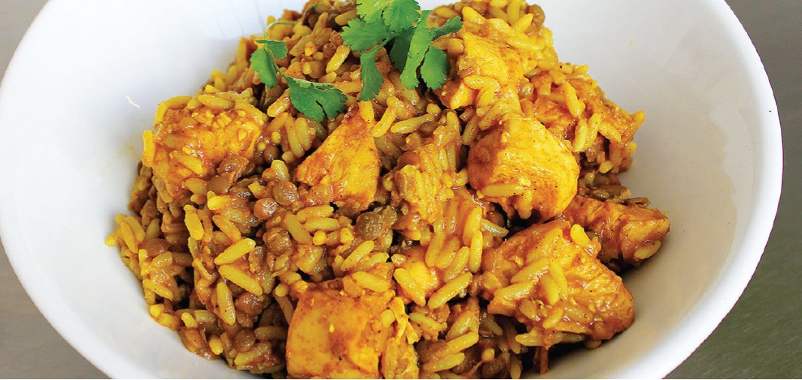

Description
We now look at at our second dish, Breyani, a meal that leaves a memorable experience with its aroma made up of a mix of herbs and spices and Killer craving that will have you breaking your diet plans
Ingredients
- 1.2L Water
- 150g What's Cooking Breyani sachet
- 1kg Chicken
- 300g Raw lentils
- 300g Rice
- 50ml Oil
Steps
- Rub chicken cubes (9 fillets) or pieces with a 150g What's Cooking Breyani sachet
- Heat oil in a pot and fry the chicken until the spice starts to roast
- Add water and bring to the boil.
- Add the raw lentils to and rice.
- Simmer until the chicken is cooked through and the rice and lentils are cooked. Add water as needed.
- Options - chopped coriander, potatoes and egg can also be added.
Home